TURN IN - Creating and Hosting a Web Map with MapLibre and GitHub Pages
Adapted from: https://labs.mapbox.com/education/impact-tools/sheet-mapper/
Overview
In this exercise, you will create a live-updating web map that displays locations from a spreadsheet. The older version of the exercise used haunted places in California as the example dataset, but the same workflow can be used for offices, field observations, event locations, emergency shelters, or any other point dataset with coordinates.

Concept note: A web map is usually made from several pieces working together: an HTML page, JavaScript libraries, a basemap, and one or more data sources. In this lab, the spreadsheet acts as the data source, and MapLibre GL JS draws the interactive map in the browser.
What You Should Understand After This Lab
By the end of this exercise, you should be able to explain:
- how a public Google Sheet can act as a simple web map data source
- why the sheet needs longitude and latitude columns
- how a CSV export URL lets JavaScript retrieve spreadsheet data
- how MapLibre GL JS displays points and popups in a browser
- how GitHub Pages or Stanford AFS can host a simple static web map
Getting Ready
There are a few resources you'll need to get started:
You will need to use a plain-text editor to write and edit your code. Do not use a document editor such as Microsoft Word. Document editors can add hidden formatting characters that break HTML and JavaScript files.
Plain-text Editors
All of these editors feature things like Code Highlighting (color coding of parts of your code), directory browsing and preview capabilities.
- Sublime is very popular with Mac users, and has versions for Windows and Linux, as well. It's very simple, and a great first "code" editor.
- Visual Studio Code for macOS or Windows is a widely used code editor with many integrations.
- Notepad++ is also a good one I used when I was a Windows user.
Templates and Data:
Tools we'll use:
- Google Sheets to create and store your event data.
- A PLAIN TEXT EDITOR (See above)
- MapLibre GL JS to add interactivity to your map and publish it on the web.
- Csv2geojson JavaScript Library to convert CSV and TSV files to GeoJSON data suitable for maps
- Stanford’s AFS web server to publish your MapLibre GL JS map (If you want to see more about simple web services at Stanford, check out: https://uit.stanford.edu/service/afs/intro
- A GitHub Account to publish your map, should AFS not work.
Note: This tutorial demonstrates how to access data from a Google Sheet using csv2geojson.js, but this solution is also appropriate for users storing data as a CSV or TSV. For more information read the csv2geojson README.
Concept note: A static website is a website made from files that can be served directly, such as
index.html, CSS, JavaScript, and images. It does not require a custom database or server-side application, which is why GitHub Pages and AFS can host this kind of map.
Create data in Google sheet
- For this exercise, you can duplicate your sheet from this template
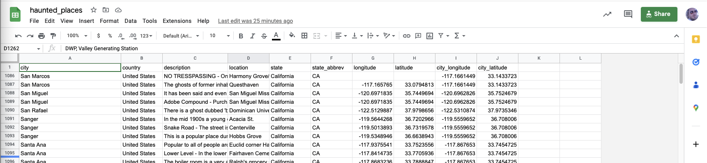
- Make the table
- ...or make your own sheet from scratch, with any data you want. You will need the following columns:
- longitude
- latitude
- Any additional fields you want to be displayed in the popups
Make your table PUBLIC!
- Once you have made your table, you will need to use the Share Button to make the table accessible so that "Anyone on the internet with the link can view":
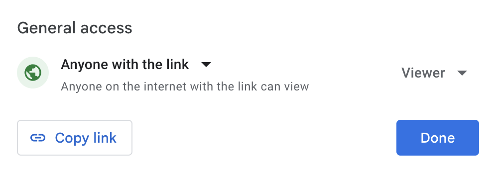
- To create an export link, copy the following link to your text editor for use, later:
https://docs.google.com/spreadsheets/d/{key}/gviz/tq?tqx=out:csv&sheet={sheetname}
Concept note: Your JavaScript code can only retrieve spreadsheet data if the sheet is public enough for the browser to access. If the sheet is private, the web map cannot read it for visitors who are not signed in with permission.
Creating a Google Sheet link:
Now that you have your dataset in Google Sheets, we need to 'craft' a custom URL that Mapbox csv2json can use as a source for the map.
- To find the Google Sheets ID for your Table, look in the URL Bar of your browser:
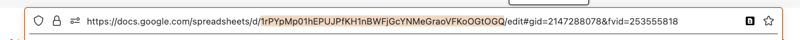
- To Find the Sheet Name, look at the bottom of the Sheet Page, for your current tab:
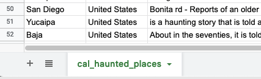
In the case of My Sheet ID and Name (In the images), they are the following (use your own):
Google Sheet ID: 1rPYpMp01hEPUJPfKH1nBWFjGcYNMeGraoVFKoOGtOGQ
Sheet name: cal_haunted_places
- Using the following template URL, craft your own CSV Direct Download URL
https://docs.google.com/spreadsheets/d/{key}/gviz/tq?tqx=out:csv&sheet={sheetname}
- Replace:
{key}with yourGoogle Sheet IDand{sheet_name}with thename of your sheet
The newly constructed URL for my example would be:
If you click on the above link, it should start a download of the table, as data.csv.
- You can test your own CSV Direct Download URL by pasting it in your browser URL bar and hitting ENTER to be sure that it initiates a
data.csvdownload
Start Coding!
In this part, you will start from template code and modify it for your own spreadsheet and map design.
Open you chosen plain text editor and create a file called
index.html.In Atom, you can go to File>New File to create a new file.
Set up the document by copying and pasting this template code into your new HTML file
(or, you can just save that webpage of html, as
index.html), but make sure you add the.htmlextension, if necessary, when you save as...
The next sections walk you through altering the above code to customize with your data and other parameters. Feel free to experiment, knowing that you can always come back to the above code and start again, fresh.
Importing a Javascript library
The following code uses the <head> tag to provide text in the HTML file that will not be rendered as text, but will import Javascript functions from another source, in this case:
- The MapLibre GL JS library, to add interactivity to your map and publish it on the web.
- The Csv2geojson JavaScript Library to convert CSV and TSV files to GeoJSON data suitable for maps
- The jQuery library for asynchronous updating within the browser.
<head></head>
<meta charset="utf-8">
<title>CSV to Map Example</title>
<!-- Load MapLibre GL JS for the map -->
<script src="https://unpkg.com/maplibre-gl@2.4.0/dist/maplibre-gl.js"></script>
<link href="https://unpkg.com/maplibre-gl@2.4.0/dist/maplibre-gl.css" rel="stylesheet" />
<!-- Load jQuery for easy AJAX requests -->
<script src="https://cdnjs.cloudflare.com/ajax/libs/jquery/3.5.0/jquery.min.js"></script>
<!-- Load csv2geojson to convert CSV to GeoJSON -->
<script src="https://npmcdn.com/csv2geojson@latest/csv2geojson.js"></script>
<style>
body, html { margin: 0; padding: 0; height: 100%; }
#map { position: absolute; top: 0; bottom: 0; width: 100%; }
</style>
</head>
Change the Basemap Style
MapLibre GL JS supports basemaps from various providers. For this exercise, the HTML file defaults to a free basemap from OpenStreetMap. You can update the style by simply replacing the link to the basemap JSON file:
// Create the map and set its starting position and zoom
var map = new maplibregl.Map({
container: 'map',
style: 'https://basemaps.cartocdn.com/gl/voyager-gl-style/style.json', // OpenStreetMap style. This can be replaced with any MapLibre style URL, see the exercise for more
center: [-122.411, 37.785], // [longitude, latitude]
zoom: 8
});
Here's a few basemaps you can try:
CartoCDN Basemaps
- Dark Matter
https://basemaps.cartocdn.com/gl/dark-matter-gl-style/style.json - Dark Matter No Labels
https://basemaps.cartocdn.com/gl/dark-matter-nolabels-gl-style/style.json - Positron
https://basemaps.cartocdn.com/gl/positron-gl-style/style.json - Positron No Labels
https://basemaps.cartocdn.com/gl/positron-nolabels-gl-style/style.json - Voyager
https://basemaps.cartocdn.com/gl/voyager-gl-style/style.json - Voyager No Labels
https://basemaps.cartocdn.com/gl/voyager-nolabels-gl-style/style.json
Institut Cartogràfic i Geològic de Catalunya (ICGC) Basemaps
- ICGC Main
https://geoserveis.icgc.cat/contextmaps/icgc.json - ICGC Dark Base Map
https://geoserveis.icgc.cat/contextmaps/icgc_mapa_base_fosc.json - ICGC Shadow Hypsometry Contours
https://geoserveis.icgc.cat/contextmaps/icgc_ombra_hipsometria_corbes.json - ICGC Dark Shadow
https://geoserveis.icgc.cat/contextmaps/icgc_ombra_fosca.json - ICGC Standard Orthophoto
https://geoserveis.icgc.cat/contextmaps/icgc_orto_estandard.json - ICGC Standard Orthophoto Gray
https://geoserveis.icgc.cat/contextmaps/icgc_orto_estandard_gris.json - ICGC Hybrid Orthophoto
https://geoserveis.icgc.cat/contextmaps/icgc_orto_hibrida.json - ICGC Geological Risks
https://geoserveis.icgc.cat/contextmaps/icgc_geologic_riscos.json - ICGC Standard Orthophoto
https://geoserveis.icgc.cat/contextmaps/icgc_orto_estandard_gris.json - ICGC Hybrid Orthophoto
https://geoserveis.icgc.cat/contextmaps/icgc_orto_hibrida.json - ICGC Geological Risks
https://geoserveis.icgc.cat/contextmaps/icgc_geologic_riscos.json
Connect your Google Sheet
The code in this html calls a Javascript Library called csv2geojson to retrieve data from the Google Sheet CSV export that you created and convert into the GeoJSON format that make use of. You can see how an HTML page calls JavaScript libraries into your browser to run as code that drive interactivity in your HTML page.
- Find the following section in your
index.htmlfile (it's immediately after the section you just edited):
// When the page is ready, get the CSV data
$(document).ready(function () {
$.ajax({
type: "GET",
//YOUR TURN: Replace with csv export link
url: 'replace this text with the link to your CSV file within the single quotes',
dataType: "text",
success: function (csvData) { makeGeoJSON(csvData); }
});
- To connect your Google Sheet, replace the following text with the Google Sheet export link that you crafted, previously in the exercise, so that:
'replace this text with the link to your CSV file within the single quotes'becomes something like:'https://docs.google.com/spreadsheets/d/1rPYpMp01hEPUJPfKH1nBWFjGcYNMeGraoVFKoOGtOGQ/gviz/tq?tqx=out:csv&sheet=cal_haunted_places'
That’s really the last of the coding you have to do. The remainder of the section about the code in your index.html is primarily for explanation, or if you are feeling adventurous and want to experiment with altering the look of your map.
Changing Your Symbology
The next part of the code in your index.html file adds the layer to the map and specifies how it will be styled. In this example, the layer is added as a circle with a 6 px radius and the color is set to purple.
Feel free to alter the following section of code in order to change the (try: size (circle-radius) or color (circle-color) of your symbols.
// Add the GeoJSON data as a layer on the map
map.on('load', function () {
map.addLayer({
id: 'points',
type: 'circle',
source: { type: 'geojson', data: geojson },
paint: {
'circle-radius': 6,
'circle-color': 'purple'
}
});
For more on customizing your circle markers see: https://maplibre.org/maplibre-style-spec/layers/#circle
Popups
This section of code creates teh on-click pop-ups for the data in the csv. Note how the column names in the csv are referred to as props.location and props.description:
// When a point is clicked, show a popup
map.on('click', 'points', function (e) {
var props = e.features[0].properties;
// Create popup HTML: location as heading, description as text
var html = `<h3>${props.location}</h3><p>${props.description}</p>`;
new maplibregl.Popup()
.setLngLat(e.lngLat)
.setHTML(html)
.addTo(map);
});
If you want to add different fields, change the text in the following line to match the column names in your own CSV:
var html = `<h3>${props.location}</h3><p>${props.description}</p>`;
Publish and Test Your Web Map
Note that because of something called Cross-Origin Resource Sharing (CORS) you won’t see the content from your Spreadsheet, until you publish your index.html. This ALSO means any changes you want to make will have to be uploaded each time to check the results.
So you’ve made a web map! But it isn’t a web page yet… and, in fact, you probably can’t see the full functionality until the page is published to the web, and accessible, publicly (again, the cross origin resource sharing thing is the culprit, here). To do that we need some way to host a webpage. There are many different ways to host a webpage. GitHub Pages is one good solution, but Stanford students have access to a service called afs.stanford.edu, which allows them to publish simple webpages.
Publish your map with your AFS Web Space Pages:
You can use Secure File Transfer Protocol (SFTP) to publish your index.html page to your Stanford AFS web hosting server space.
University IT maintains Instructions, which are not great, and need to have their screenshots updated, but are sufficient if you are brave and resourceful (you are):
Download the SecureFX Client:
https://uit.stanford.edu/software/scrt_sfx
Instructions for Installing and Licensing SecureFX Client, for Mac:
https://uit.stanford.edu/service/ess/scrt_sfx/securefx/mac/install
Instructions for Installing and Licensing SecureFX Client, for Windows (Bundled with SecureCRT):
https://uit.stanford.edu/service/ess/scrt_sfx/install
Using SecureFX to move files to your AFS space
Below is a screenshot of the Mac version of SecureFX. You can see on the left side of teh sofrtware, (behind the login screen) that you can browse files on your local machine, and on the right, you can browse folders and files on your remote AFS space. You can also drag and drop files from one place to another. THis is how we will use SecureFX.
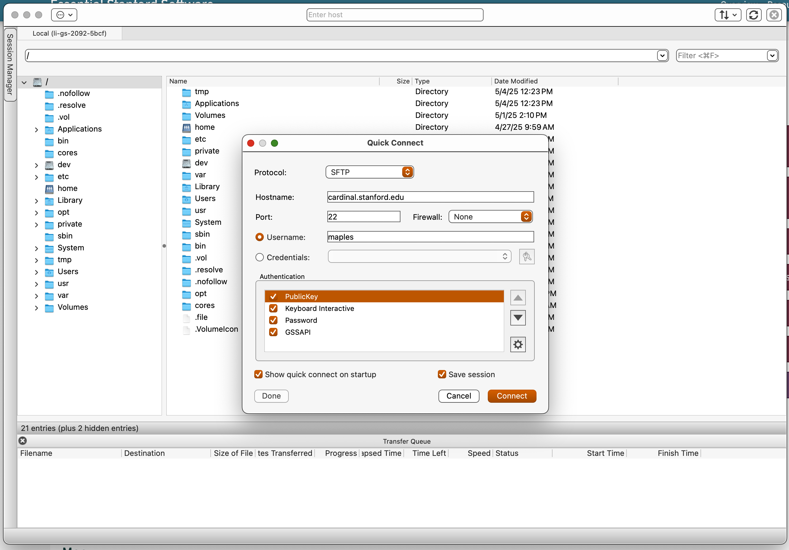
- Connect to
cardinal.stanford.eduand login with your SUNetID and password. - Browse into your
WWWfolder and right-click New>Folder to make a new folder calledsheetmapper.
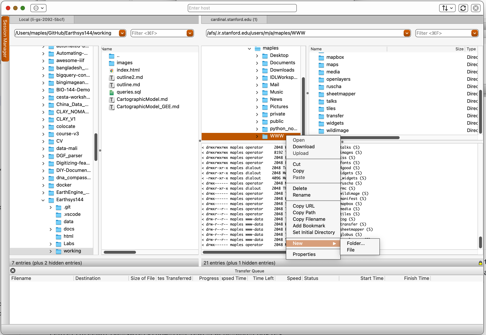
- Find your
index.htmlfile in the view of your local drive, and drag-and-drop it into thesheetmapperfolder.
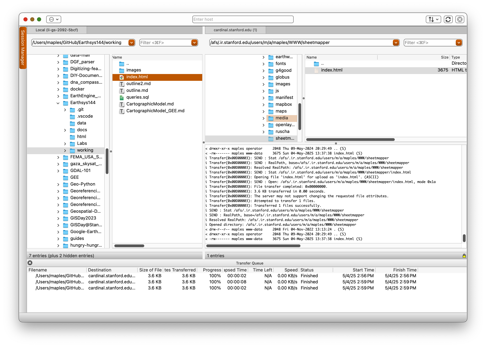
- Test your sheetmapper page replacing
SUNETIDwith your ownSUNetIDin the following URL:http://web.stanford.edu/~SUNETID/sheetmapper/index.html
Here’s the finished version of the example map:
https://web.stanford.edu/~maples/sheetmapper/index.html
A Note About Browsers and Security
If you are a Safari or Chrome user, you shouldn't have any trouble viewing your sheetmapper index.html, but if you are a Firefox user, things may not work, at first, or sometimes at all. This is because Firefox is a bit alarmist about the Cross-Origin Resource Sharing (CORS) thing. If you are not able to see your map, or data, try the following:
- Hold the Shift Key and refresh the browser Page
- Clear your cache and cookies using the methods described, here: https://www.kaspersky.com/resource-center/preemptive-safety/how-to-clear-cache-and-cookies
- Try a different browser
If AFS Does Not Work For You
You don’t need to do this for the homework unless AFS doesn’t work for you (it seems finicky for some students for some reason), but it’s nice to know that the following is an option for web publishing this type of application. This option also means that your access to the material won't end when your time at Stanford does.:
Publish your map with GitHub Pages:
- Create a GitHub account if you don’t have one. I suggest taking advantage of the GitHub Student Developer Pack: https://education.github.com/pack
- Create a new GitHub repository:
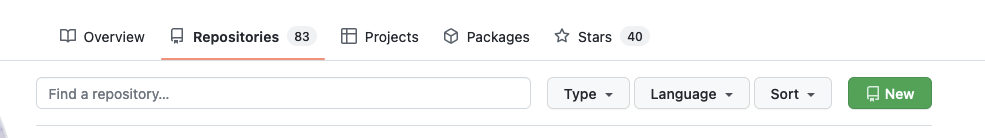
- Name it for your map (this will be visible in the URL).
- Make it Public
- Click the box to ‘Initialize this repository with a README’
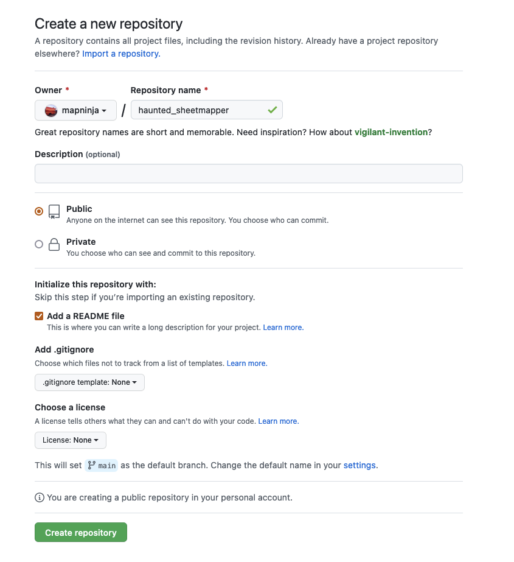
- Either:
- Upload your
index.htmlfile to your new repository, or... - Create a new file called
index.html - In the blank
index.htmlfile, paste in the entire edited code that you built in your text editor and commit it.
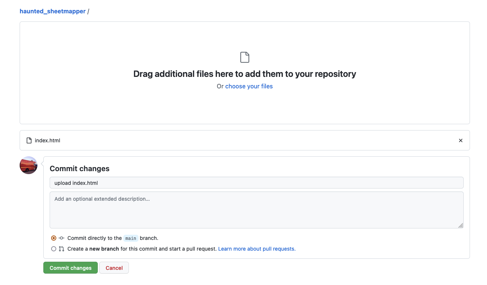
- Enable GitHub Pages by going to Settings>Pages for your repo and changing the Branch from None to main, and save
- After a minute or two, your GitHub Page URL will be published online. It will look something like
HTTPS://[YOUR GITHUB NAME].github.io/[YOUR REPO NAME]/- you can find your URL navigating back to the GitHub Pages section in your repository settings.
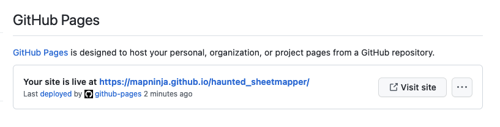
Here’s the GitHub URL for the example:
https://mapninja.github.io/haunted_sheetmapper/index.html
Deliverable
Submit the following for grading:
- The live URL for your hosted
index.html(AFS preferred; Github is allowed).
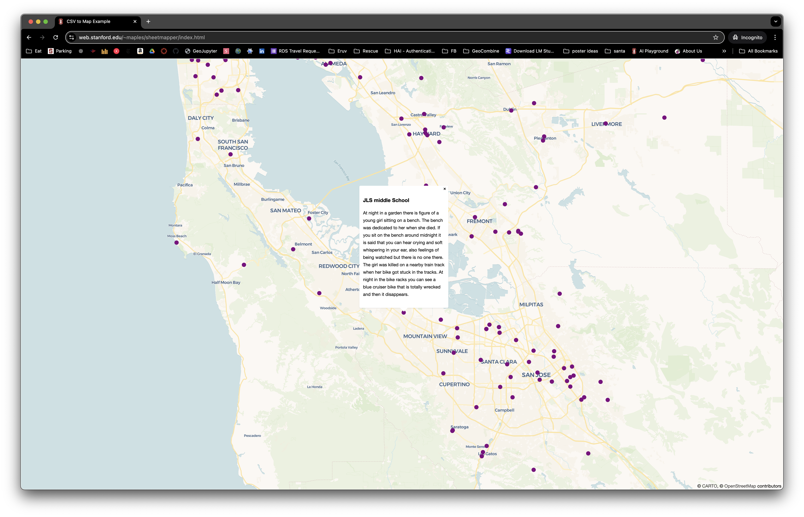